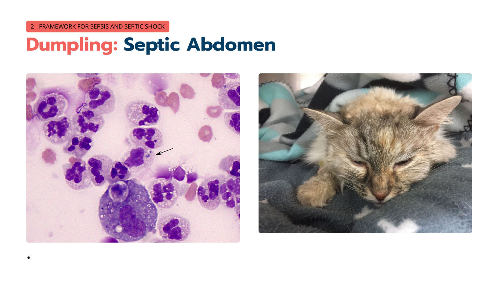
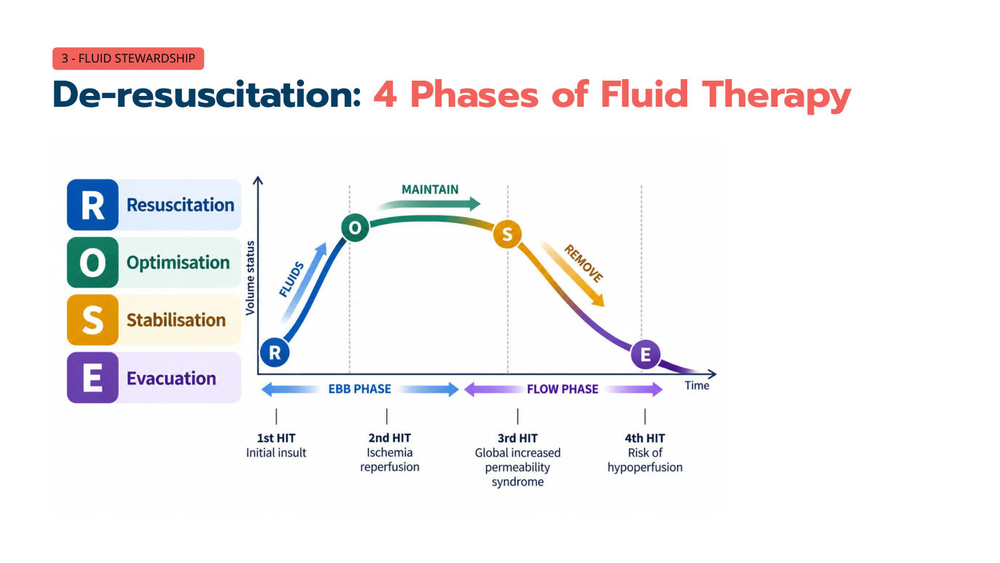

2026 年的貓敗血症
主講：Elise Boller, DVM, DACVECC
TSFM Annual Conference 2026｜Day 2 — The Critical Cat: Sepsis, Organ Dysfunction & Metabolic Emergencies｜Session 1｜場次 08
目前只有講義，沒有課堂錄音；講義上的影片（Vimeo）與現場投票無法收錄。
⭐ 必記原則
- 新定義（VetSEPSIS 2026，犬貓相同）：感染＋失調的宿主反應＋器官功能障礙＝敗血症；SIRS 不再是必要，也不夠
- 敗血性休克：充分輸液後仍需要升壓劑才能維持 MAP ≥ 65 mmHg，且乳酸 > 2 mmol/L
- 貓的表現不一樣：低體溫（不是發燒）、相對心搏過慢、黏膜蒼白、脈弱／低血壓——低體溫又有感染的貓是敗血症候選，不是讓人放心
- 前幾小時五步驟：辨識 → 復甦 → 抗生素＋採樣＋感染源控制 → 支持衰竭器官 → 再評估、降階
- 貓的 bolus：5–10 mL/kg、15–30 分鐘，每次後重新評估；人的 30 mL/kg 不適用於貓
- 不是所有低血壓都是低血容：血管麻痺需要升壓劑，不是更多輸液——早點用（人醫首選 norepinephrine）
- 敗血性休克1 小時內給抗生素，是復甦的一部分；感染源控制要同時規劃，不是等「穩定了」
- 休克解除後：去復甦（ROSE 的 E），目標體液平衡為零；問自己「如果現在沒在用，我會開始嗎？」——抗生素和輸液都一樣
敗血症：重症的頭號問題
▾人類的數字（Meyer, NEJM 2024）
敗血症
- 4,900 萬例
相關死亡
- 1,100 萬
院內死亡
- 約 30%
1. 敗血症的定義：舊的與新的
▾從 SIRS 到器官功能障礙
舊（2026 年前）
- 感染＋SIRS＝敗血症
- SIRS 是非特異性的「入場門檻」
- 低體溫的貓可能「不符合」
新
- 感染＋失調的宿主反應＋器官功能障礙
- SIRS 不需要，也不夠
- 犬貓相同
新的臨床問題只有兩個：① 是否懷疑或確認感染？ ② 有沒有器官功能障礙的證據？（而不是「這隻貓符合 SIRS 嗎？」）
2026 獸醫共識定義與敗血性休克
- 敗血症（Goggs 等，JVECC 2026；改良德爾菲法、12 位國際專家）：與失調的宿主對感染反應相關、導致器官功能障礙的危及生命症候群
- 敗血性休克：敗血症在充分輸液復甦後，仍需升壓劑才能維持 MAP ≥ 65 mmHg，且血清乳酸 > 2 mmol/L（Sepsis-3）；獸醫共識描述為心血管不穩定＋代謝異常的子集合
2. 辨識：貓的表現型不一樣
▾前幾小時的框架
- 辨識
- 復甦
- 抗生素、採樣與感染源控制
- 支持衰竭的器官
- 再評估、降階
病例 Dumpling：一個非常糟的早上
- 7 歲家貓短毛；安靜，厭食 2 天、精神越來越差
- T 36.1 °C、HR 148、RR 28、Doppler 80 mmHg
- 股動脈脈搏弱、CRT 延長、沉鬱；腹痛；POCUS：腹腔游離液
貓的表現型
| 參數 | 狗 | 貓 |
|---|---|---|
| 心跳 | ↑ 心搏過速 | 正常或 ↓ 心搏過慢 |
| 黏膜 | 早期鮮紅 → 晚期蒼白 | 蒼白，可能黃疸 |
| 體溫 | 正常或 ↑ | 低體溫 |
| 休克器官 | 腸胃道、肝臟 | 肺臟 |
低體溫
- 而不是發燒
相對心搏過慢
- 而不是預期的心搏過速（可能被低體溫壓住）
黏膜蒼白
- 灌流不足的徵象
脈弱／低血壓
- 心血管功能障礙
學員講義：貓常見的敗血症來源——敗血性腹膜炎（腸胃穿孔、膽汁性腹膜炎）、膿胸、腎盂腎炎／UTI、肺炎、咬傷／深部組織感染、子宮蓄膿。2026 定義犬貓相同；貓的差別在辨識。
Dumpling 的初步檢查
| 項目 | 結果 | 意義 |
|---|---|---|
| 乳酸 | 4.1 | 高乳酸血症（器官功能障礙指標） |
| iCa | 0.9 mmol/L | 低血鈣（敗血症常見、非特異） |
| 血糖 | 3.2 mmol/L（58 mg/dL） | 低血糖 |
| 嗜中性球 | 1.5 × 10³/µL | 白血球減少 |
| （Creatinine） | 4.2 mg/dL（371 µmol/L） | 腎功能障礙 |
| 總膽紅素 | 1.35 mg/dL（23 µmol/L） | 高膽紅素血症（> 0.5 mg/dL 有預後意義） |
| POCUS | 腹腔游離液 | → 腹腔穿刺 |
敗血症常見的檢驗變化：
非特異性
- 低或高血糖
- 低血鈣
- 白血球增多或減少
- 低白蛋白
器官功能障礙指標
- 高膽紅素血症
- 高乳酸血症
- DIC 指標（凝血異常、血小板低下）
講義只寫「Chem: 4.2 mg/dL (371 µmol/L)」，依單位換算判斷是 creatinine。
3. 復甦：小量輸液、早點升壓
▾不是所有低血壓都是低血容
血管麻痺（vasoplegia）的機轉：
- iNOS 造成不當的血管擴張
- 相對的血管加壓素缺乏
- 酸中毒造成對兒茶酚胺不敏感
輸液反應性與貓的耐受度
- 評估輸液反應性：用動態指標，而不是靜態表現
- 給小量、個別化的 bolus：目標導向的小量輸液挑戰
- 重新評估灌流：沒反應就停，想到血管麻痺
學員講義：每次 bolus 後問「灌流有改善嗎？」沒有的話，問為什麼——而不是「還要再給多少」。
早點用升壓劑
- 人醫指引：Norepinephrine 是敗血性休克的第一線升壓劑
- 適當矯正容積後，低血壓／灌流異常仍持續就開始
💡 講義沒有列升壓劑劑量；常用 norepinephrine 0.05–2 µg/kg/min CRI 從低劑量開始調整。
監測：溫度計和 Doppler
講義只放兩張圖：溫度計（36.8 °C）與 Doppler 血壓計——最基本的兩個工具，每隻生病的貓都要量。
4. 抗生素、採樣與感染源控制
▾每一小時都算數
- 敗血性休克：可以的話在第一小時內給抗生素——把它當成復甦組合（bundle）的一部分（Kumar 2006；Seymour 2017）
- 可行時先採培養再給抗生素（但不要因此延誤）
名詞
| 名詞 | 意思 |
|---|---|
| 經驗性治療 | 在知道病原或藥敏之前就開始的治療 |
| 廣效 | 涵蓋很多可能病原 |
| 單一藥物 | 一種藥提供廣效涵蓋 |
| 合併治療 | 兩種以上藥物互補，更快降低病原量 |
單一廣效藥物
管理分級燈號（📄 27 引用澳洲維多利亞省「Not all bugs need drugs」海報）：🟢 低重要性、🟡 中、🔴 高重要性（保留使用）。
| 分級 | 藥物 | 劑量 | 說明 |
|---|---|---|---|
| 🔴 | Piperacillin–tazobactam | 50 mg/kg IV q6h | 非常廣效（G−／G+／厭氧），抗綠膿桿菌；保留給嚴重／高風險感染；腎排除 |
| 🟡 | Ampicillin–sulbactam | 20–30 mg/kg IV q6–8h | 社區感染 G+／厭氧＋許多 G−；有 β-lactamase 保護；腎排除 |
| 🔴 | Cefotaxime | 20–50 mg/kg IV q6–8h | 第三代頭孢；G− 強；厭氧弱；腎排除 |
合併廣效治療
| 分級 | 組合 | 劑量 | 說明 |
|---|---|---|---|
| 🟢＋🔴 | Ampicillin ＋ enrofloxacin | 22–30 mg/kg IV q8h ＋ ≤ 5 mg/kg/day IV | ISCAID 列出；β-lactamase 保護較 amp-sulbactam 少；貓 enrofloxacin ≤ 5 mg/kg/day（視網膜毒性） |
| 🟡＋🔴 | Clindamycin ＋ enrofloxacin | 10 mg/kg IV q12h ＋ ≤ 5 mg/kg/day IV | ISCAID 列出；厭氧涵蓋好 |
| 🟡＋🔴 | Clindamycin ＋ marbofloxacin | 10 mg/kg IV q12h ＋ 2.75–5.5 mg/kg IV q24h | ISCAID 列出 |
| 🟢＋🔴 | Ampicillin ＋ marbofloxacin | 22–30 mg/kg IV q8h ＋ 2.75–5.5 mg/kg IV q24h | ISCAID 列出 |
| 🟡＋🔴 | Ampicillin–sulbactam ＋ marbofloxacin | 20–30 mg/kg IV q6–8h ＋ 2.75–5.5 mg/kg IV q24h | 廣效經驗性 |
| 🟡＋🔴 | Ampicillin–sulbactam ＋ enrofloxacin | 20–30 mg/kg IV q6–8h ＋ ≤ 5 mg/kg/day IV | 廣效經驗性 |
| 🔴＋🟢 | Cefotaxime ＋ metronidazole | 20–50 mg/kg IV q6–8h ＋ 10–15 mg/kg IV q12h | G−＋厭氧；適合腹腔來源 |
| 🟡＋🔴 | Cefazolin ＋ marbofloxacin | 25 mg/kg IV q6h ＋ 2.75–5.5 mg/kg IV q24h | G+＋擴大 G−；腹腔敗血症的厭氧涵蓋不足 |
講義註：一定要查最新的獸醫藥典確認劑量與副作用；以上是初始經驗性治療的一般原則。
感染源控制與採樣也是復甦的一部分
問自己：這裡有沒有什麼我可以「物理性移除」的東西？
| 來源 | 控制方法 |
|---|---|
| 敗血性腹膜炎 | 手術／引流 |
| 膿胸 | 胸腔引流 |
| 傷口／膿瘍／壞死組織 | 引流／清創 |
| 子宮 | 卵巢子宮切除／剖腹探查 |

5. 支持衰竭的器官
▾學員講義：只計算無法用原發疾病、已知共病、未處理的休克或預期藥物作用解釋的變化。器官功能障礙要連續監測，趨勢比單一數值重要；目前沒有經驗證的貓版 SOFA。
| 系統 | 指標 | 最重要的支持建議 |
|---|---|---|
| 呼吸 | 低血氧 ± 給氧需求增加；敗血症相關肺損傷 → 非心因性肺水腫／ARDS（ARDSVet 準則） | 腸道營養、維持正常血氧 |
| 腸胃 | 厭食、餵食不耐、腸阻塞／蠕動異常、嘔吐下痢、吐血／黑便、腹內高壓 | |
| 心血管 | 低血壓、需要升壓劑；CRT 延長、周邊脈搏弱；周邊與中心溫差增加；乳酸 > 2.0；心肌（收縮或舒張）功能障礙 | 好的輸液管理、避免高血糖 |
| 代謝／荷爾蒙 | 低血糖；CIRCI（重症相關皮質類固醇不足） | |
| 腎臟 | 寡／無尿 < 1 mL/kg/h 持續 ≥ 6 小時；creatinine 急性上升 ≥ 0.3 mg/dL；尿圓柱 | 好的輸液管理、監測、考慮 ursodiol、腸道營養 |
| 肝臟 | 膽紅素 > 0.5 mg/dL（有預後意義）；高血氨；低膽固醇；餐前／餐後膽酸上升 | |
| 凝血 | 血小板 < 100 × 10³/µL 或急性下降 > 50%；凝血時間延長 > 參考上限 25%（FXII 缺乏不算，常見陷阱）；D-dimer 上升；新的血栓事件 | 腸道營養、避免內皮傷害、考慮血漿 |
| 中樞神經 | 意識模糊、木僵、昏迷；相對基準的新惡化 |
學員講義：貓的注意事項
- 乳酸在貓是休克指標，但不一定能預測死亡
- 早點放導尿管密切監測尿量
- 總膽紅素是貓最有用的生化預後指標
- 貓常有 FXII 缺乏（aPTT 延長），不要混淆凝血評估
- 生病的貓出現相對心搏過慢是警訊，不是讓人放心
為什麼敗血症會造成這麼嚴重的循環障礙？
敗血症的死亡來自器官功能障礙，而驅動它的是：免疫失調、補體活化、發炎–凝血交互作用、內皮傷害、微循環血流異常。
6. 再評估、降階、去復甦
▾抗生素降階
降階：新資訊出來、病患穩定後，縮窄或停止經驗性治療。
同時想：如果我錯了怎麼辦？風險有多高？
輸液的四個階段（ROSE）

| 階段 | 做什麼 | 對應的打擊 |
|---|---|---|
| R 復甦 Resuscitation | 給輸液（Ebb 期） | 第 1 擊：初始損傷 |
| O 最佳化 Optimisation | 維持 | 第 2 擊：缺血再灌流 |
| S 穩定 Stabilisation | 開始移除（Flow 期） | 第 3 擊：全身通透性增加症候群 |
| E 排除 Evacuation | 去復甦 | 第 4 擊：低灌流風險（移除太多） |
避免體液累積症候群（FAS）
| 做法 | 說明 |
|---|---|
| 嚴格記錄進出量 | 包括所有注射、沖管、藥物稀釋液、尿量 |
| 每 8 小時量體重 | 「輸液蠕變」是真的——小量很快就累積 |
| 評估器官傷害 | 腎、肺、腸 |
| 早期腸道營養 | 安全時就開始 |
| 限鈉與動員 | 促進淋巴流與液體清除 |
排除（Evacuation）
利尿劑——第一線
- Furosemide 0.2–1 mg/kg IV：從低劑量開始、觀察、調整
- 促進排鈉，AKI 時特別有用
- 不夠時加 spironolactone
- 膠體滲透壓很低時考慮白蛋白
腎臟替代療法——利尿劑失敗時
- 利尿劑不足時
- 特別是有腹腔室症候群（ACS）或 AKI
- 血行動力學不穩時偏好連續性 RRT
7. 預後與星期一要改的事
▾貓的預後：我們知道的
- 預後取決於：來源、器官功能障礙嚴重度、衰竭器官數、感染源控制、共病
- 貓的敗血症資料有限、異質性高，而且常被安樂死干擾
- 狗的證據比貓強
星期一可以做得不一樣的事
- 不要再用 SIRS 當診斷門檻——問：有感染＋器官功能障礙嗎？
- 認真看體溫——低體溫又有感染的貓是敗血症候選
- 每隻生病的貓都量血壓——不量很容易漏掉低血壓
- 每次 bolus 後都重新評估——灌流沒改善？問為什麼，而不是還要給多少
- 同時規劃感染源控制——不是等貓「穩定」之後
- 早點考慮升壓劑——適當容積後仍低血壓時
- 抗生素降階——有微生物結果就縮窄